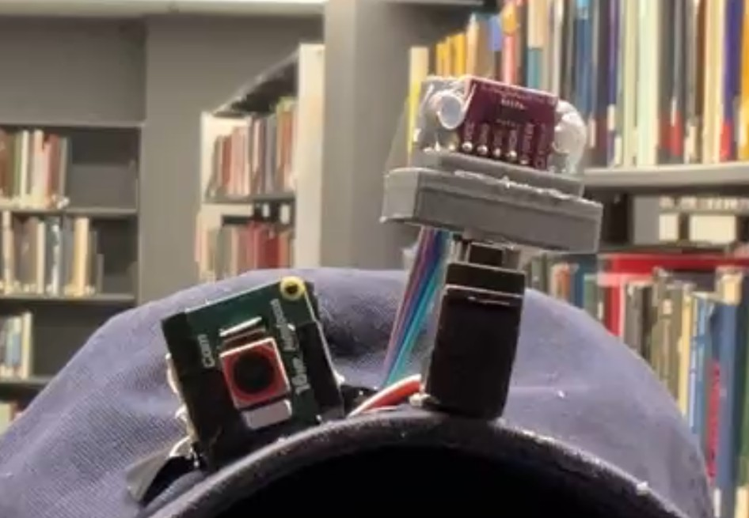
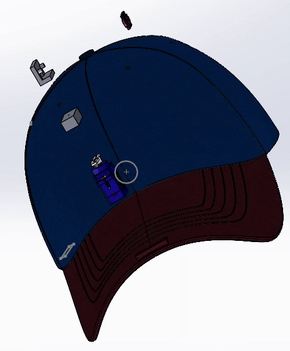
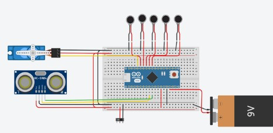

BatHat
wearable navigation aid for the visually impaired : jan- apr 2025

Overview
Built for my cornerstone engineering class, where the theme was biomimicry. Inspired by how bats use echolocation to navigate in the dark, my team designed BatHat, a wearable that helps visually impaired users detect obstacles a traditional cane can miss. The hat uses LiDAR to sense its surroundings and haptic vibrations to alert the user in real time. We also developed a supplemental program on a Raspberry Pi with a Pi Cam to execute API calls for user location.
How it works
BatHat combines real-time obstacle sensing with directional haptic
feedback in a head-worn, 3D-printed package. A LiDAR sensor
continuously measures the distance to nearby objects, and an Arduino
nano microcontroller processes those readings live. The device has
five vibration motors positioned around the housing, so when an
obstacle comes within 500 mm, the motors facing its direction buzz
gives the user a rough sense of where the hazard is. The housing was
modeled in SolidWorks and 3D printed to sit comfortably on the head
for everyday wear.
Beyond obstacle detection, we added a Raspberry Pi with a Pi Cam for
location awareness. When the user presses a button, the camera
captures an image and sends it to a vision AI model (Gemini) with
the prompt "where am I?" — then a connected speaker reads the
answer aloud, describing the user's surroundings.


Design decisions & challenges
We chose haptic feedback over audio cues to avoid adding unnecessary noise to the user's environment. Visually impaired users often rely on ambient sounds to navigate their surroundings, so adding beeps could interfere with the sounds they depend on. We used five motors instead of one to make the feedback directional, allowing users to identify where an obstacle is located.
The hardest part was designing the enclosure. Early on, the LiDAR kept throwing false signals and detecting obstacles that weren't actually there. Fixing this was an iterative process. We first traced the issue to the housing: the walls were sitting within the sensor's field of view, so we adjusted the sensor's placement and modified the enclosure to leave that area open. We then tuned the 500 mm distance threshold so it would only register objects within a useful range. After a few rounds of adjustments, the false readings decreased and the sensor became much more reliable.
Results
The final prototype reliably detected obstacles in real time and communicated their direction through directional haptic feedback, with the Pi Cam adding spoken location descriptions on demand. The video below shows the design process and a demo of it working.
My contributions
- Designed the housing and component layout in SolidWorks
- Programmed the LiDAR sensors and haptic feedback system on the Arduino IDE
- Soldered the sensor and motor connections onto a protoboard